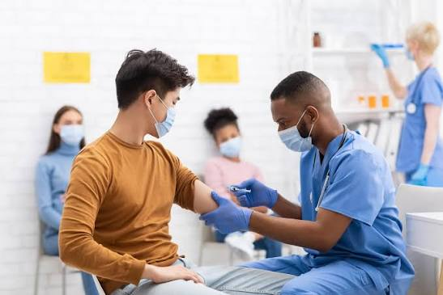
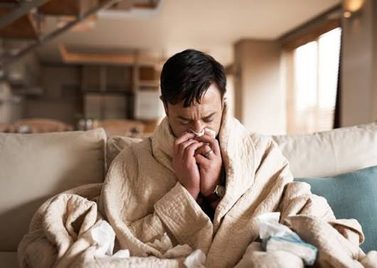
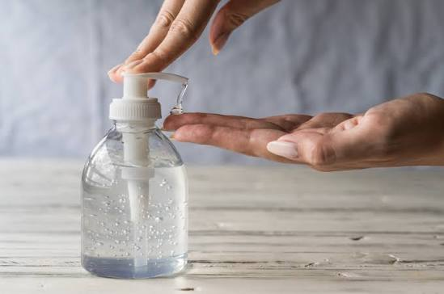
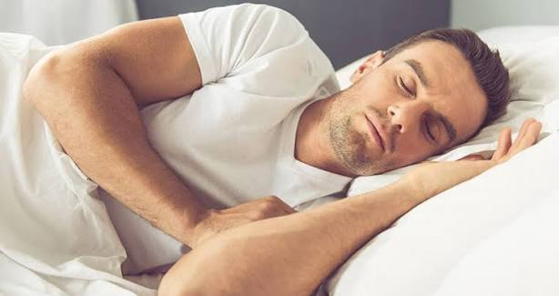
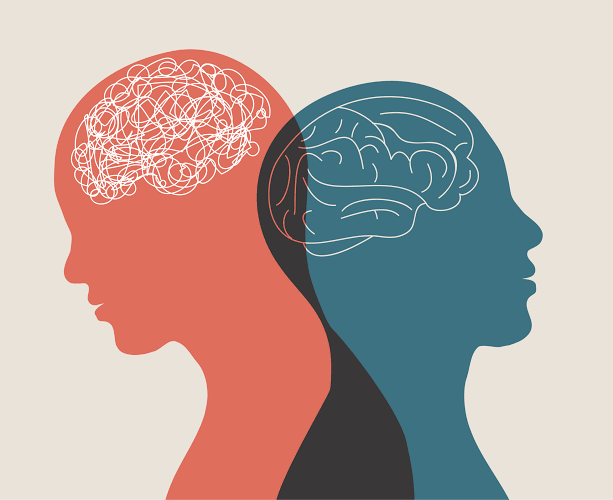

MYTHS & FACTS
Discover the truth behind common health beliefs and misinformation.
About vaccines

Myth:
"Vaccines always cause serious illness."
Fact:
Vaccines undergo extensive testing and safety evaluations before they are approved for public use. They help the body's immune system recognize and fight harmful diseases, reducing the risk of serious infections and complications. Like other medicines, vaccines may cause mild side effects, such as soreness at the injection site, slight fever, or tiredness, which usually disappear within a few days. Although serious allergic reactions and other severe side effects can occur, they are very rare. Overall, vaccination is an important way to protect individuals and communities from preventable diseases.
Antibiotics cure all infections?

Myth:
"Antibiotics can cure all types of infections."
Fact:
Antibiotics are medicines used to treat bacterial infections, but they do not work against viruses such as influenza, the common cold, or COVID-19. Taking antibiotics unnecessarily can contribute to antibiotic resistance, making some bacterial infections more difficult to treat. Always use antibiotics only when prescribed by a qualified healthcare professional.
Sanitizer & Hand soap

Myth:
"Using hand sanitizer is always better than washing hands with soap and water."
Fact:
Washing hands with soap and clean water is one of the most effective ways to remove germs, dirt, and harmful substances. Hand sanitizer containing at least 60% alcohol can be a useful alternative when soap and water are unavailable. However, handwashing is especially important when hands are visibly dirty or greasy.
Water can cure illness?
Myth:
"Drinking more water can cure every illness."
Fact:
Drinking enough water is important for maintaining good health because it helps regulate body temperature, support digestion, and prevent dehydration. However, water alone cannot cure diseases or infections. Proper medical treatment, a balanced diet, and healthy habits are still necessary to maintain overall health.
Sleeping less

Myth:
"Sleeping less is harmless as long as you feel energetic."
Fact:
Getting enough sleep is essential for maintaining physical and mental health. Lack of sleep can affect concentration, memory, mood, and the immune system. Adults generally need at least seven hours of sleep each night, while children and teenagers require more depending on their age. Maintaining a regular sleeping schedule can help improve overall well-being.
Exercise makes you lose weight?
Myth:
"Exercise is only necessary for people who want to lose weight."
Fact:
Physical activity provides many health benefits beyond weight management. Regular exercise helps strengthen muscles and bones, improves heart health, supports mental well-being, and reduces the risk of certain chronic diseases. Even simple activities such as walking, cycling, and dancing can contribute to a healthier lifestyle.
Mental health Problems

Myth:
"People with mental health problems are simply weak."
Fact:
Mental health conditions are genuine health concerns that can affect anyone, regardless of age, background, or lifestyle. They may be influenced by biological, psychological, and environmental factors. Seeking professional help, receiving support from loved ones, and discussing mental health openly can help individuals manage their conditions and improve their quality of life.
Breakfast is the key?
Myth:
"Skipping breakfast always helps you lose weight."
Fact:
Skipping breakfast does not automatically result in weight loss. Maintaining a healthy weight depends on several factors, including overall eating habits, physical activity, and individual health conditions. Eating a balanced breakfast can provide energy and important nutrients to support concentration and daily activities.